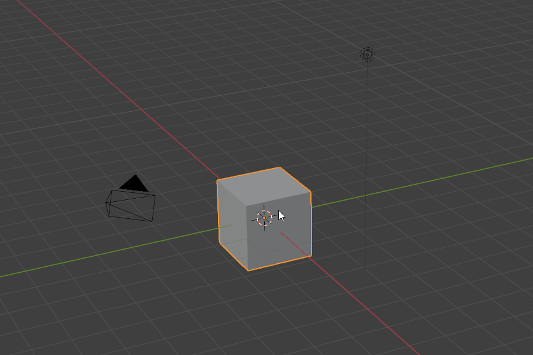
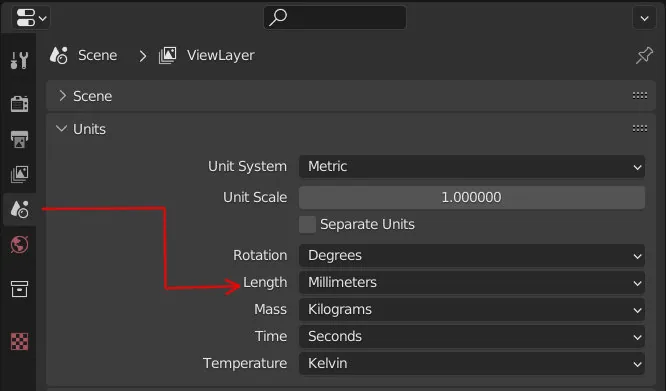
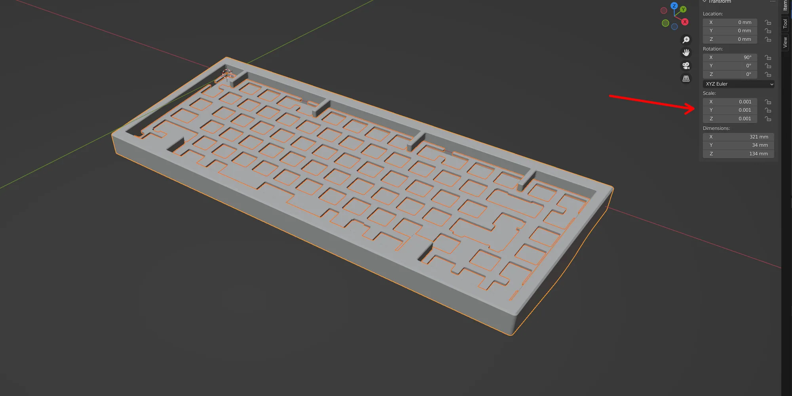
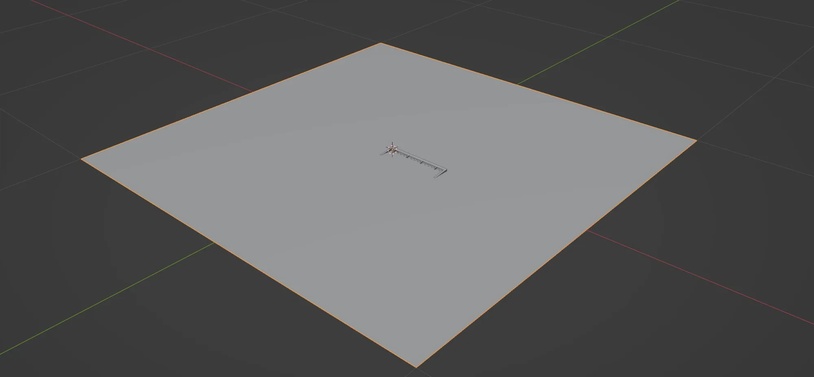
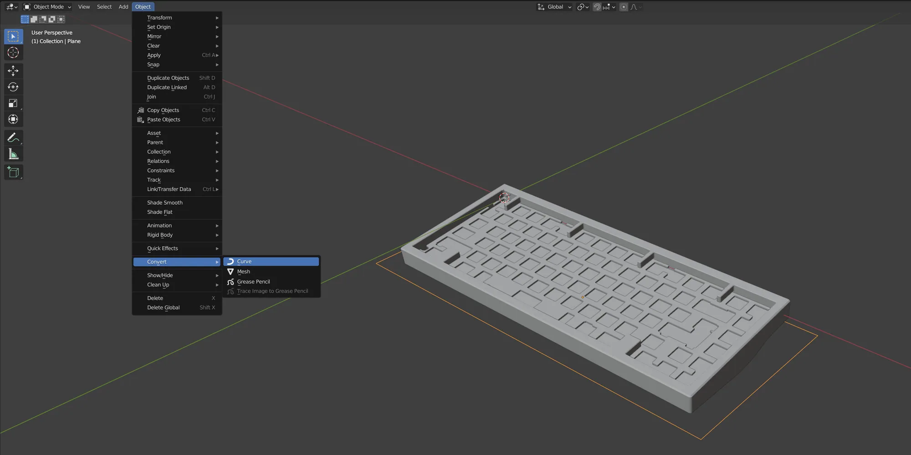
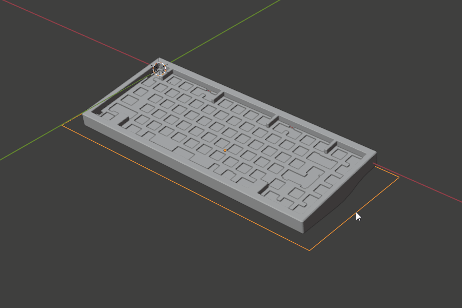
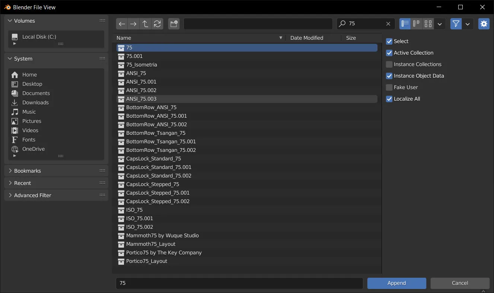
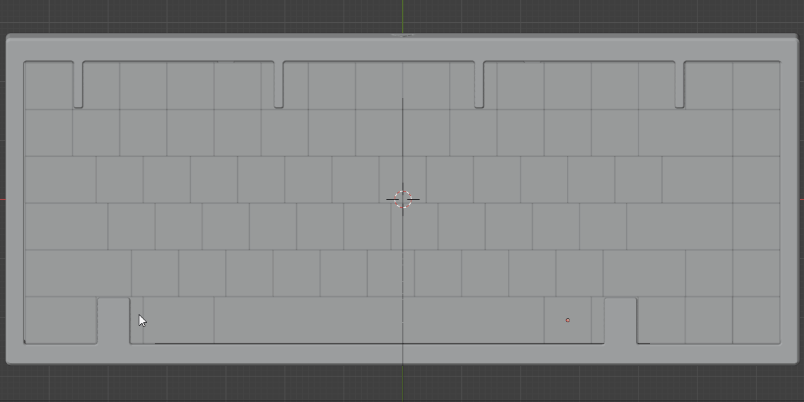
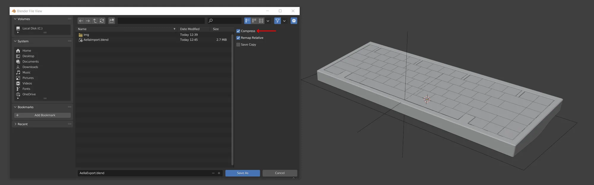

客製化鍵盤的準備工作#
本教學不涉及你所用 CAD 軟體的匯出設定：先把設計匯出成 OBJ 或 FBX，再匯入 Blender。另一種做法是用 Stepper 這款 Blender 外掛直接匯入 STEP/STP 檔案。
這裡以 Alchemist Keyboards Aella 的渲染檔案轉成 OBJ 為例。右鍵另存為

新增 Blender 檔案，按 A X D 刪除預設內容（立方體、攝影機、燈光），然後在屬性面板的 Scene Properties 頁籤將單位設為毫米（millimeters）。

現在匯入 Aella 的 OBJ：點 File > Import > Wavefront Obj（F4 I W）。

你會立刻發現比例不對——這裡毫米單位被當成米匯入了。

按 S 0.001，將鍵盤縮放至原來的千分之一。縮放後可能會暫時看不見它，按 Home 鍵重新框住視圖。

現在套用縮放和旋轉：按 Ctrl+A，再按一次 A，選 All Transforms（套用全部變換）。

接下來做移動把手：Add > Mesh > Plane（Shift+A M P）。

按住 Shift 點選鍵盤底殼，把它加入選擇，然後用 Object > Transform > Align Objects 對齊平面：在對話方塊裡按住 Shift 同時點選 X 和 Y 兩個軸。

再重複一次 Align Objects，這次把 Align Mode 設為 Negative Sides（負方向側），軸選擇 Z。

平面位置正確了，把它縮到比鍵盤底面略大一點（S X，再 S Y），然後套用縮放。

用 Object > Convert > Curve 將它轉換為曲線，移動把手就建立完成了。

把鍵盤的所有物件都父級到這個移動把手上：保持移動把手選取，按 A 全選，然後 Ctrl+P > Object (Keep Transform)。這樣以後移動把手時，其他部分會跟著動。按 Alt+G 清空位置，把移動把手和它所有子物件重設到世界原點。

現在匯入鍵帽配列，這裡用 75% 配列：點 File > Append，瀏覽到 KRK201 檔案並雙擊開啟（blend 檔案的行為和資料夾一樣），進入 Collections，搜尋 75，追加上 75 集合。

你可能還要開啟該集合的視埠可見性：在大綱視圖裡開啟視埠停用過濾（viewport disable filter），為 75 集合勾選。

選取配列自帶的移動把手（十字形的空物件），參照主鍵區（Alphas）把配列移到合適位置，然後在 X 軸上旋轉 7 度（這是 Aella 的傾角）。

把配列的移動把手父級到鍵盤的移動把手上。

佔位符要逐個移動才能和鍵盤配列對齊。在網格尺寸（grid size）裡輸入 0.002381，可以把吸附增量設為 1/8 單位。

開啟 Tsangan 底排。

選取要移動的佔位符，用軸向約束移動：G X 沿 X 軸，G YY 沿局部 Y 軸，依此類推。Win 鍵要刪掉，Alt 鍵用左側的按鍵關聯複製過來（Ctrl+L 再按 O）。按住 Ctrl，或點磁鐵圖示開啟吸附，就能用上吸附增量。

現在鍵盤就準備好了，也相容 KRK2。把它另存為壓縮 blend 檔案用於分發，再匯入 KRK2 即可。
